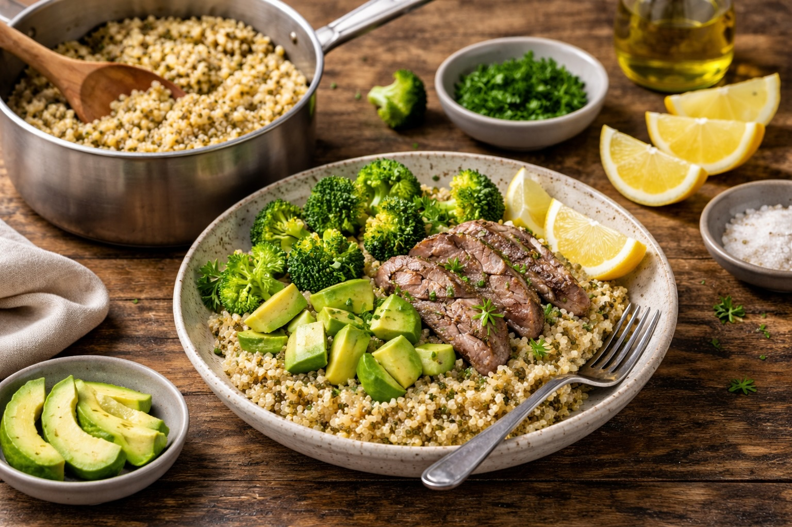

Whole Foods Recipes: Quinoa — Simple Foundation Base
Last updated: March 2026

A simple onion-garlic quinoa method that turns this nutrient-dense seed into a practical base meal for vegetables, bowls, and leftover protein.
Key takeaways
- Rinse first — this removes bitterness and improves flavor.
- Build a flavor base — onion, garlic, and olive oil make quinoa far more satisfying.
- Toast briefly — a short toast before adding liquid improves depth.
- Think in bowls — quinoa works best as a flexible base for vegetables, protein, and olive oil.
Purpose
A simple quinoa method that turns this high-protein seed into a flavorful foundation for bowls, vegetables, and leftover meats. The goal is not complexity — it is a repeatable base meal built from whole ingredients.
Ingredients
- 1 cup quinoa, rinsed well
- 2 cups water or broth
- 1 tbsp olive oil
- ½ yellow onion, chopped
- 1 clove garlic (or 1 tsp minced garlic)
- Salt to taste
Method
- Rinse the quinoa. Use a fine strainer and rinse 20–30 seconds to remove bitterness.
- Build the flavor base. Heat olive oil in a pot over medium heat. Add onion and cook 3–4 minutes until softened. Add garlic and cook 30 seconds.
- Toast the quinoa. Add rinsed quinoa to the pot and stir for about 1 minute.
- Add liquid. Pour in water or broth, season lightly with salt, and bring to a boil.
- Simmer. Reduce heat to low, cover, and cook 15 minutes.
- Rest. Turn off heat and let quinoa sit covered for 5 minutes.
- Fluff and serve. Use a fork to fluff before serving.
How to use it
- Base bowl: quinoa + vegetables + protein + olive oil.
- With leftovers: sliced lamb or chops reheat well and pair naturally with sautéed onion and broccoli.
- Mediterranean style: finish with avocado, parsley, lemon, or olive oil.
Why quinoa works
- High-protein foundation: quinoa is more nutrient-dense than many basic grains.
- Fast cooking: ready in about 20 minutes including rest time.
- Versatile: works with vegetables, meats, and simple sauces.
- Whole-food friendly: fits a practical home cooking system built around real ingredients.
Personal note
Quinoa works best when treated as a foundation food rather than a side dish. Once the onion-garlic base is in place, it becomes something you actually want to eat and repeat.
Next steps
Continue with more Whole Food Cooking.
This article focuses on general food quality and cooking with quality ingredients, not medical advice.